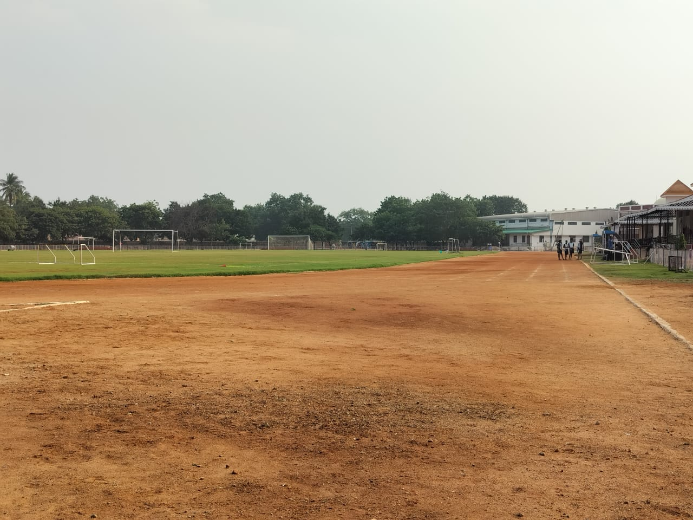

ASV Football Academy

The inception of the Football Academy at Ananthapuram Sports Village (ASV) in 2010 marked a significant chapter in the pursuit of footballing excellence. Since its establishment, the academy has been a crucible for nurturing talent and honing the skills of aspiring young footballers. Currently, ASV proudly supports a cohort of 53 boys competing in the Under-15, Under-17, and Under-20 age groups. These budding football enthusiasts undergo a transformative journey within the academy, where their passion for the sport is seamlessly blended with structured training, mentorship, and holistic development.
At the heart of this footballing haven lies a meticulously crafted infrastructure designed to provide an optimal environment for growth and performance. The natural grass football field serves as the canvas for skill refinement, strategic play, and the manifestation of footballing dreams. Complementing this, a 400m dirt running track encircles the field, offering a platform for conditioning and fitness enhancement. The club house, a hub of activity and camaraderie, stands as a testament to the communal spirit that defines ASV's football culture. Within its confines, four dressing rooms facilitate pre and post-match rituals, while three office spaces cater to administrative needs, fostering a seamless operational framework. A storage facility ensures that the equipment necessary for training and competitions is readily accessible. The impact of the Football Academy extends beyond the training grounds, permeating the broader footballing landscape through the initiation of the Anantapur Football League (AFL). Since 2014, this league has become a pivotal platform, providing a stage for boys and girls across various age categories to showcase their talents and compete at a grassroots level. The AFL not only fosters a spirit of healthy competition but also serves as a scouting ground, identifying emerging talents who may eventually join the ranks of ASV's Football Academy.
The strategic categorization of players into Under-15, Under-17, and Under-20 age groups aligns with the developmental stages of young footballers. This thoughtful approach ensures that coaching and mentorship are tailored to address the specific needs, aspirations, and challenges associated with each age category. It goes beyond technical skills, emphasizing character-building, teamwork, and leadership qualities that contribute to the holistic development of the players. ASV's Football Academy is not just a training ground; it's a crucible where dreams take shape, and futures are forged. The academy's commitment to nurturing talent extends beyond the pitch, integrating education into the developmental journey of each participant. The goal is not only to produce skilled footballers but also to empower individuals with the knowledge and resilience needed to navigate the complexities of life